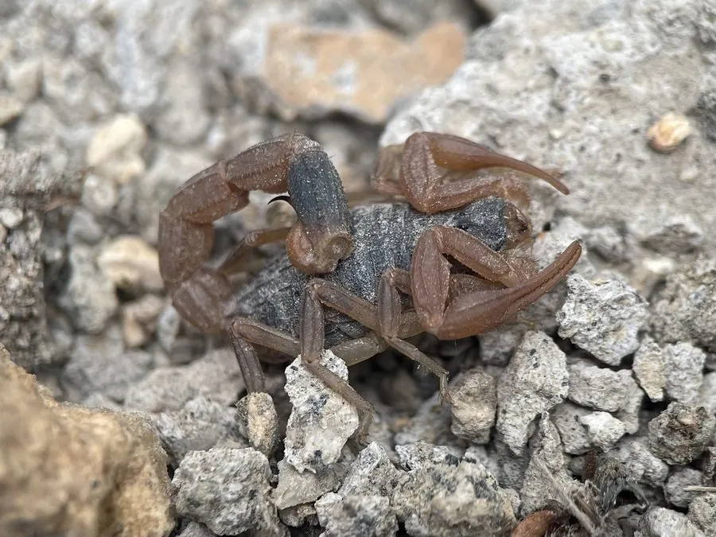

蛛形动物 · 动物界
东亚钳蝎 Mesobuthus martensii

中国常见的药用蝎，夜间捕食昆虫，尾刺有毒，中药“全蝎”即其干燥全体，如今已开展规模化养殖。
- 分类
- 门节肢动物门纲蛛形纲目蝎目科钳蝎科属正钳蝎属
- 栖息环境
- 干燥的岩缝、土坯墙、石堆与农田边缘
- 地理分布
- 中国华北、东北、西北及华中部分地区，朝鲜半岛亦有分布
- 保护级别
- IUCN 暂无评估；中国未列入国家重点保护名录
物种志
东亚钳蝎体长约 4–6 厘米，身体分头胸部和腹部，头胸部前端有一对粗壮的大螯（钳），腹部末端有球状尾节和弯曲的毒针；体色多为黄褐或深褐色，背甲和足部带浅色纵纹。它昼伏夜出，白天藏在石块、土缝、墙脚等处，夜间捕食昆虫、蜘蛛、蚯蚓等小型无脊椎动物，捕到猎物后先用大螯固定，再以尾刺注入毒液。
它分布于中国华北、东北、西北及华中部分地区，也见于朝鲜半岛，栖息于干燥的岩缝、土坯房和农田边缘。东亚钳蝎为卵胎生，交配后妊娠约 6–8 个月，每胎产 20–40 只幼蝎，幼蝎出生后爬上母背生活数日。它是中药材“全蝎”的来源，长期被大量捕捉，现已有规模化养殖以缓解野生资源压力。其尾刺毒性较强，被螫后局部剧烈疼痛红肿，过敏体质者可能出现严重反应，需避免接触。
形态与习性
- 食性昆虫、蜘蛛、蚯蚓等小型无脊椎动物
- 体长约 4–6 cm
- 寿命约 4–6 年
- 繁殖卵胎生，妊娠 6–8 个月，每胎 20–40 只
- 活动节律夜行性，白天藏于石缝墙脚
- 毒性尾刺毒性较强，被螫可致剧痛红肿，严重过敏者需就医
- 药用干燥全体入药，药材名“全蝎”
趣味知识
- 东亚钳蝎是中药“全蝎”的来源，药用部位为其干燥虫体。
- 幼蝎出生后会爬到母蝎背上生活数日，再独立活动。
- 蝎子在紫外线下会发出荧光，夜间用紫外灯较容易发现它们。